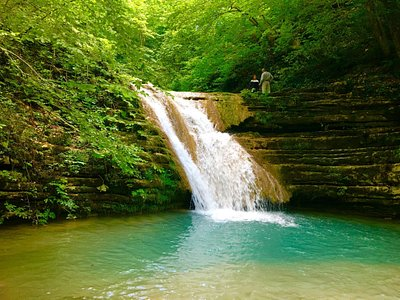
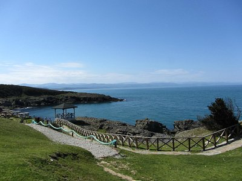
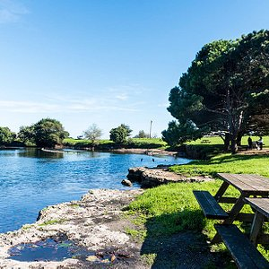

Sinop, Türkiye'nin Karadeniz Bölgesi'nin batı karadeniz bölümünde bulunan Sinop ilinin merkezi olan şehirdir. Karadeniz kıyısında, Boztepe Burnu'nun karayla birleşme noktasında yer alır. Sinop Kalesi, tarihi ve turizm açısından kentin en ilginç yeridir.Türkiye'nin kuzeyde en uç noktası olan İnceburun Sinop ilindedir. Aynı zamanda Sinop yaklaşık 55 bin kişi olan şehir merkezi nüfusuyla Türkiye'nin en küçük illerinden biridir.
Yarımadanın güney yönündeki iç liman ise rüzgârlara kapalı konumuyla ve sakin deniziyle güney Karadeniz'in en önemli limanıydı. Bu özellikleri yüzünden "Akdeniz" ismini almıştır. Tarih boyunca işlek bir liman yaşantısı ve tersane faaliyeti bu limanda gerçekleşmiştir. 19. yüzyıla kadar tamamen ayakta duran surlardan ise günümüze büyük bir kısmı kalmıştır ve yıkıntılarından rekonstrüksiyonu yapılabilir. Şehrin gelişimi sürekli olarak doğu yönde, Boztepe Burnuna doğru olurken, kuzeydeki Akliman ve Anadolu yönünde birkaç azınlık yerleşmesinden başka bir yerleşim olmamıştır. Doğudaki yarımada ise gittikçe sarplaşmakta, Hıdırlık tepesinde 187 metre yüksekliğe ulaşmakta ve nihayet deniz yönünde dik yarlar ile kuşatılmaktadır. Bu durumda şehrin deniz yönünden ve berzahtan zaptedilmesi imkânsız olmaktadır...


